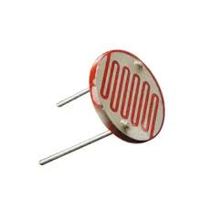
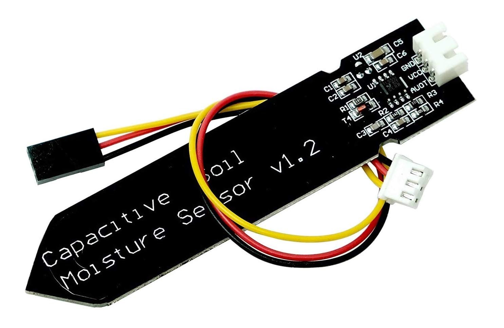
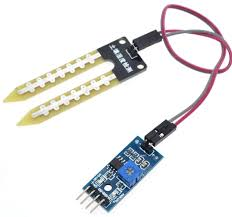
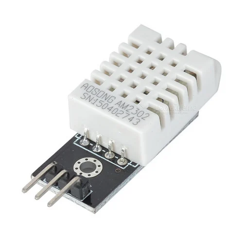
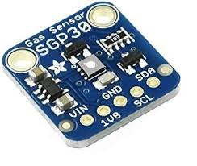

Welcome to Our Smart Farming Solution
Our project combines IoT technology with agriculture to create an intelligent farming solution. By utilizing a network of sensors connected to an ESP32, we monitor critical parameters such as soil moisture, temperature, and air quality. This real-time data helps farmers make informed decisions, enhancing crop health and yield.

Our Sensor Network
LDR (Light Dependent Resistor)
The LDR sensor measures light intensity, allowing farmers to optimize sunlight exposure for crops.
Capacitive Soil Moisture Sensor
The capacitive soil moisture sensor measures volumetric water content of the soil without direct contact.
Resistive Soil Moisture Sensor
The resistive soil moisture sensor works by measuring the electrical resistance of the soil.
DHT22 Sensor
The DHT-22 sensor monitors temperature and humidity levels essential for crop health.
SGP30 Sensor
The SGP-30 sensor measures air quality parameters crucial for maintaining a healthy environment for crops.
By integrating these sensors into our IoT platform, we provide farmers with comprehensive insights that drive efficient farming practices and enhance crop health.
Benefits of Smart Farming
Smart farming represents a revolutionary shift in agricultural practices. By integrating IoT solutions, farmers can significantly enhance productivity and sustainability. Key benefits include:
Increased Efficiency: Automating tasks reduces labor costs and increases operational efficiency.
Resource Conservation: Smart irrigation and precise nutrient management minimize waste, conserving water and fertilizers.
Improved Crop Health: Continuous monitoring allows for early detection of issues, enabling timely interventions.
Data-Driven Decisions: Access to real-time data supports informed decision-making for better crop management.